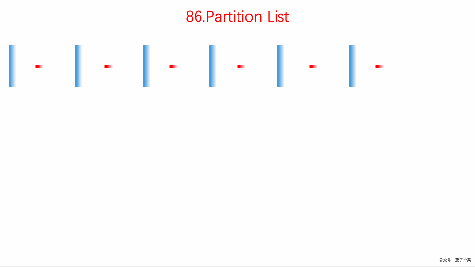

Partition List
Given a linked list and a value x, partition it such that all nodes less than x come before nodes greater than or equal to x.
You should preserve the original relative order of the nodes in each of the two partitions.
Example:
Input: head = 1->4->3->2->5->2, x = 3
Output: 1->2->2->4->3->5
class Solution {
public ListNode partition(ListNode head, int x) {
// before and after are the two pointers used to create the two list
// before_head and after_head are used to save the heads of the two lists.
// All of these are initialized with the dummy nodes created.
ListNode before_head = new ListNode(0);
ListNode before = before_head;
ListNode after_head = new ListNode(0);
ListNode after = after_head;
while (head != null) {
// If the original list node is less than the given x,
// assign it to the before list.
if (head.val < x) {
before.next = head;
before = before.next;
} else {
// If the original list node is greater or equal to the given x,
// assign it to the after list.
after.next = head;
after = after.next;
}
// move ahead in the original list
head = head.next;
}
// Last node of "after" list would also be ending node of the reformed list
after.next = null;
// Once all the nodes are correctly assigned to the two lists,
// combine them to form a single list which would be returned.
before.next = after_head.next;
return before_head.next;
}
}
Back